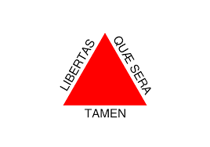

Sou uma pessoa interessada em aprender e buscar informações que valorizam o desenvolvimento pessoal e profissional.
Sou formado em Engenharia Civil, pós-graduado em Engenharia de Segurança do Trabalho e mestre em Arquitetura e Urbanismo. Atualmente estou em transição de carreira, como estudante DEV da Trybe.
Brasileiro 🇧🇷
Residente em Antônio Prado de Minas - Minas Gerais 